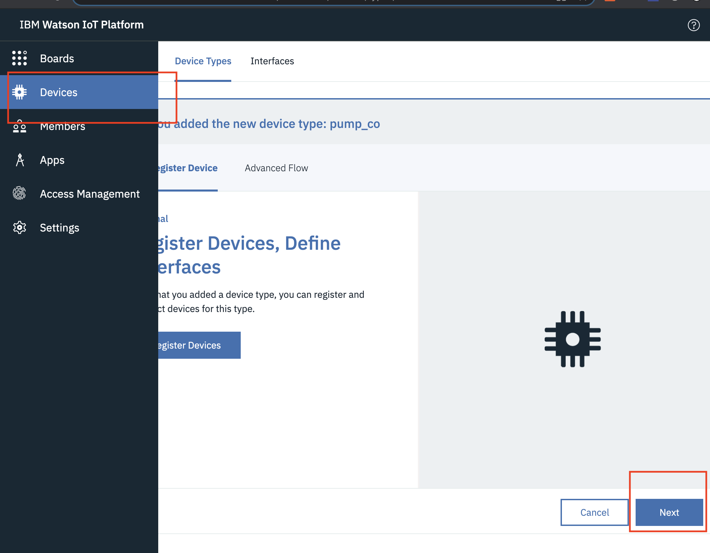
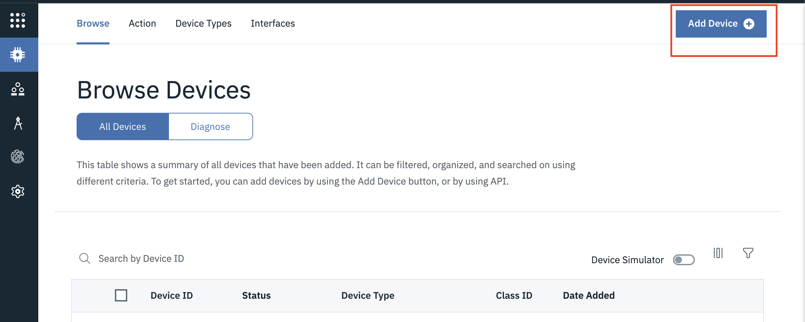
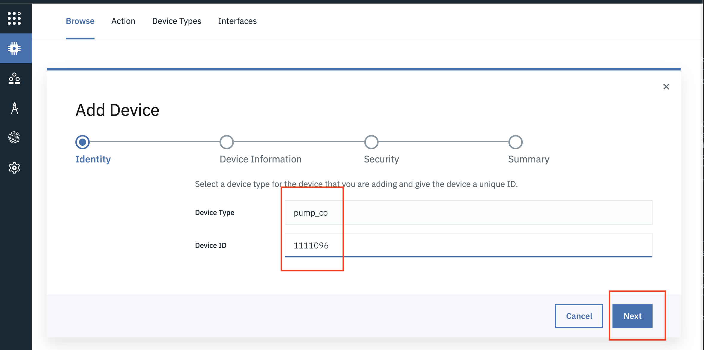
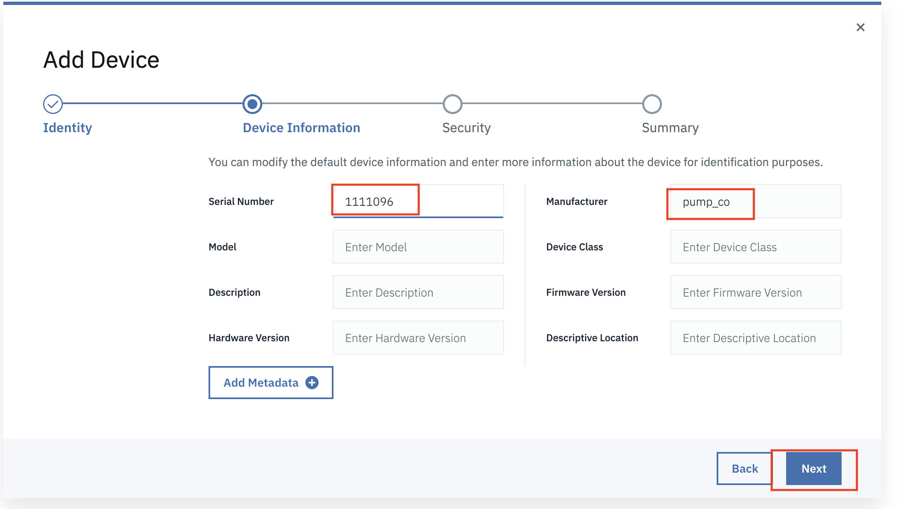
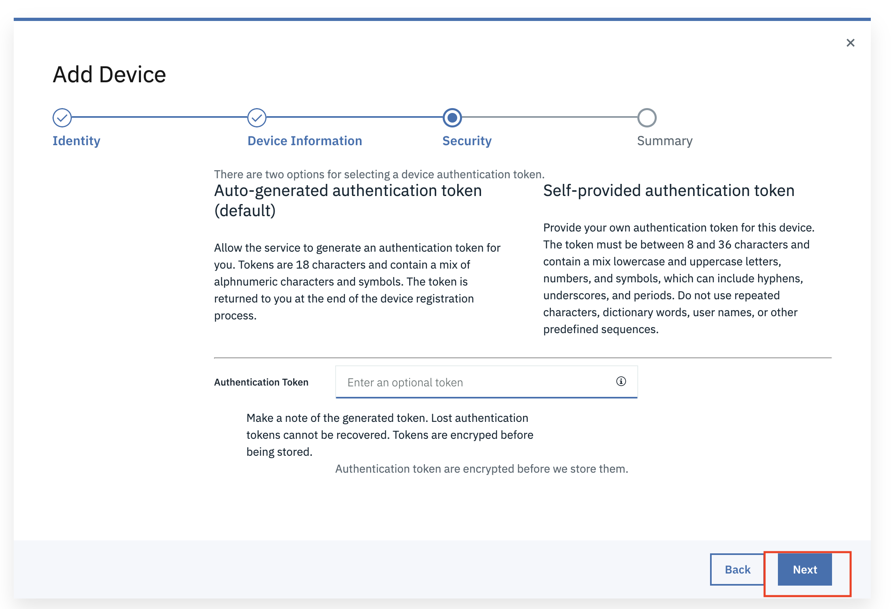
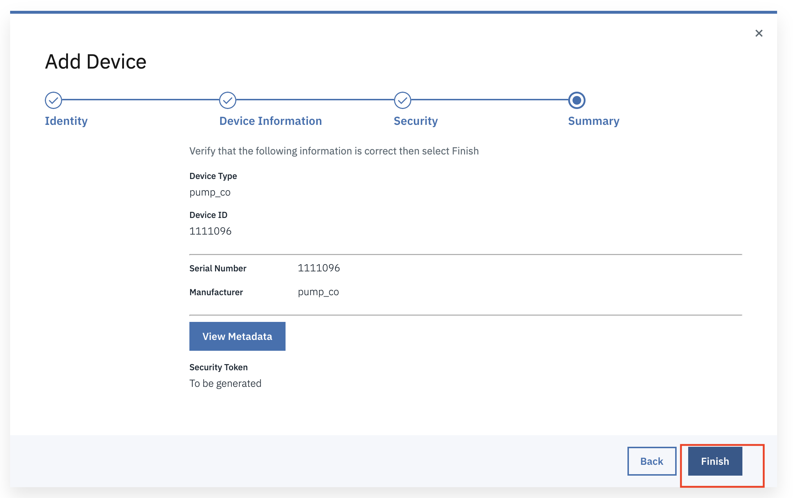
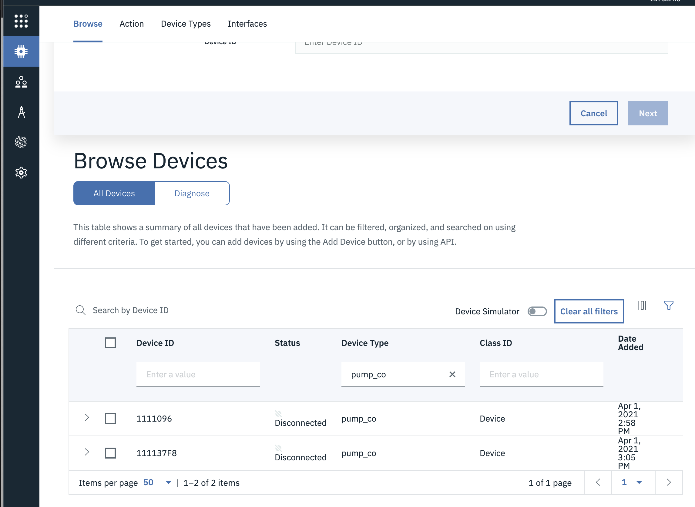
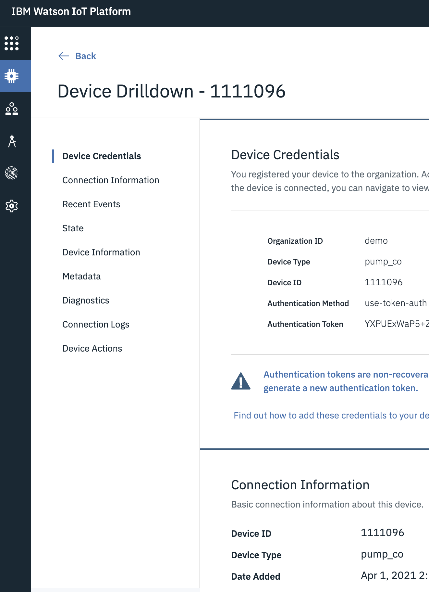

Create Devices
In this exercise you will crete the devices that will store the simulated pump data being sent to Monitor. Create two pump Devices
named 11111096 and 111137F8 for the Device Type named pump_co.
Note
Remember to replace co in the device type name with your own initials.
Create Devices
-
Stay in the Monitor Watson IoT Platform service, go to the
Devicesmenu  -
Click
Add Device . -
On the
Add Devicepage, select your just-createdpump_coasDevice Typeand enter11111096inDevice ID. After adding that device you will repeat the following steps for a second device with ID111137F8Replacecowith your initials for the device type you created. ClickNext.  -
On the
Device Informationpage, leave theSerial Numbervalue blank and enter the Device ID11111096and other information you want, click Next.  -
Depending on the version of IOTP the
Groupstab may be present, accept the defaults, clickNext.  -
On the
Securitypage, accept the defaults, clickNext. -
On the
Summarypage, accept the defaults, clickFinish.  -
Save the device summary token information. You will need it later when you connect your simulator to send data.
``` Organization ID your org id Device Type pump_co Device ID 111137F8 Authentication Method use-token-auth Authentication Token your token
Organization ID your org id Device Type pump_co Device ID 11111096 Authentication Method use-token-auth Authentication Token your token
`` 9. ClickBackand repeat above steps 1. to 6. for 1 more Pump withDevice ID=111137F8`. -
On
Devices, ClickBrowsetab menu. Click the funnel icon. Enterpump_coin the Search field forDevice Type, and you will now see your 2 pumpDevicesforpump_co. -
You have now created the required
pump_coDevice Type and the 2 pump devices11111096 and111137F8 we will use
in this lab.
we will use
in this lab.